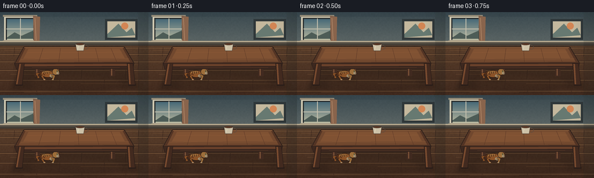
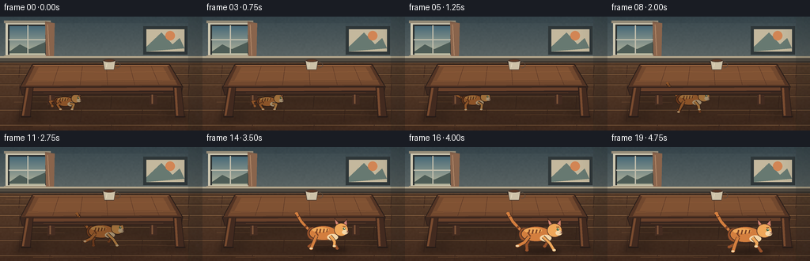
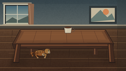
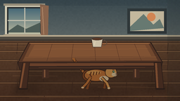
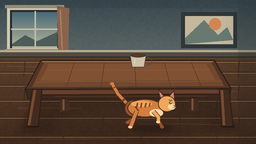
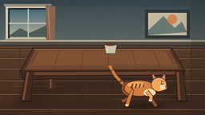

CODING AGENTS AS PIXEL WORLD MODELS
traex/DeepSeek-V4.1-Flash · dynamic_spatial_relationship_0017
点击播放 · 原生 RGB 像素
逐轮保存的候选
回放视频、检查图与代码变化。
每份候选均可单独播放。实际图片检查记录在下方工具轨迹中。
候选 01播放与检查图
点击播放 · 原生 RGB 像素


展开代码变化
--- 上一保存版本
+++ 本次保存版本
@@ -0,0 +1,564 @@
+from pathlib import Path
+import math
+
+import numpy as np
+from PIL import Image, ImageDraw, ImageFilter
+
+import artifact_io
+
+
+WIDTH = 256
+HEIGHT = 144
+FRAMES = 20
+SS = 4
+SCALE = WIDTH * SS
+
+
+def mix(a, b, t):
+ return tuple(int(round(a[i] + (b[i] - a[i]) * t)) for i in range(3))
+
+
+def clamp(value, lo=0.0, hi=1.0):
+ return max(lo, min(hi, value))
+
+
+def smoothstep(edge0, edge1, value):
+ t = clamp((value - edge0) / (edge1 - edge0))
+ return t * t * (3.0 - 2.0 * t)
+
+
+def xy(value):
+ return int(round(value * SS))
+
+
+class Canvas:
+ def __init__(self, image):
+ self.image = image
+ self.draw = ImageDraw.Draw(image)
+
+ def line(self, points, fill, width=1):
+ scaled = [(xy(x), xy(y)) for x, y in points]
+ self.draw.line(scaled, fill=fill, width=max(1, xy(width)), joint="curve")
+
+ def ellipse(self, bounds, fill, outline=None, width=1):
+ scaled = tuple(xy(v) for v in bounds)
+ self.draw.ellipse(
+ scaled,
+ fill=fill,
+ outline=outline,
+ width=max(1, xy(width)) if outline else 0,
+ )
+
+ def polygon(self, points, fill, outline=None, width=1):
+ scaled = [(xy(x), xy(y)) for x, y in points]
+ self.draw.polygon(scaled, fill=fill)
+ if outline:
+ self.draw.line(
+ scaled + [scaled[0]],
+ fill=outline,
+ width=max(1, xy(width)),
+ joint="curve",
+ )
+
+ def rectangle(self, bounds, fill, outline=None, width=1):
+ scaled = tuple(xy(v) for v in bounds)
+ self.draw.rectangle(
+ scaled,
+ fill=fill,
+ outline=outline,
+ width=max(1, xy(width)) if outline else 0,
+ )
+
+
+def make_background():
+ y = np.linspace(0.0, 1.0, HEIGHT * SS, dtype=np.float32)[:, None]
+ wall_top = np.array([58, 73, 79], dtype=np.float32)
+ wall_bottom = np.array([151, 151, 139], dtype=np.float32)
+ wall = wall_top * (1.0 - y[..., None]) + wall_bottom * y[..., None]
+ wall = np.repeat(wall, WIDTH * SS, axis=1)
+
+ floor_y = np.linspace(0.0, 1.0, HEIGHT * SS, dtype=np.float32)[:, None]
+ floor_top = np.array([106, 76, 52], dtype=np.float32)
+ floor_bottom = np.array([65, 42, 30], dtype=np.float32)
+ floor = floor_top * (1.0 - floor_y[..., None]) + floor_bottom * floor_y[..., None]
+ floor = np.repeat(floor, WIDTH * SS, axis=1)
+
+ floor_mask = np.arange(HEIGHT * SS)[:, None] >= xy(55)
+ base = np.where(floor_mask[..., None], floor, wall).astype(np.uint8)
+
+ noise_small = np.random.default_rng(17017).normal(
+ 0.0, 5.0, (HEIGHT // 2, WIDTH // 2)
+ ).astype(np.float32)
+ noise = np.asarray(
+ Image.fromarray(np.clip(noise_small + 128, 0, 255).astype(np.uint8)).resize(
+ (SCALE, HEIGHT * SS), Image.Resampling.BICUBIC
+ ),
+ dtype=np.float32,
+ )
+ noise = np.repeat(noise[:, :, None], 3, axis=2)
+ base = np.clip(base.astype(np.float32) + (noise - 128.0) * 0.24, 0, 255).astype(np.uint8)
+ return Image.fromarray(base, "RGB")
+
+
+def draw_room(canvas):
+ d = canvas
+
+ # Window, with cool exterior light that motivates the warm room palette.
+ d.rectangle((7, 7, 62, 51), (208, 201, 178))
+ d.rectangle((10, 10, 59, 48), (39, 44, 45))
+ sky_top = (72, 105, 119)
+ sky_bottom = (180, 180, 155)
+ for i in range(36):
+ t = i / 35.0
+ d.rectangle((12, 12 + i, 57, 13 + i), mix(sky_top, sky_bottom, t))
+ d.polygon([(12, 44), (25, 35), (37, 41), (57, 32), (57, 46), (12, 46)], (77, 92, 86))
+ d.line([(35, 11), (35, 47)], (194, 190, 172), 1.4)
+ d.line([(11, 29), (58, 29)], (194, 190, 172), 1.4)
+ d.rectangle((5, 5, 64, 8), (165, 153, 130))
+ d.rectangle((5, 49, 64, 52), (151, 139, 117))
+
+ # Curtain and a quiet framed print keep the table as the dominant object.
+ d.polygon([(57, 6), (69, 8), (68, 53), (58, 51)], (137, 100, 76))
+ d.line([(60, 10), (62, 49)], (178, 137, 105), 1.0)
+ d.rectangle((181, 12, 237, 48), (47, 55, 57))
+ d.rectangle((185, 16, 233, 44), (196, 184, 157))
+ d.polygon([(185, 38), (204, 20), (218, 35), (227, 27), (233, 40), (185, 44)], (103, 121, 113))
+ d.ellipse((209, 18, 221, 30), (210, 133, 84))
+
+ # Baseboard and floor boards.
+ d.rectangle((0, 50, WIDTH, 58), (80, 74, 65))
+ d.rectangle((0, 50, WIDTH, 52), (183, 169, 142))
+ d.line([(0, 57), (WIDTH, 57)], (49, 43, 38), 1.2)
+
+ board_edges = [61, 72, 85, 100, 117, 136]
+ for index, y in enumerate(board_edges):
+ d.line([(0, y), (WIDTH, y)], (62, 42, 31), 0.8)
+ d.line([(0, y + 1.1), (WIDTH, y + 1.1)], (160, 117, 76), 0.55)
+ seams = [25, 103, 180, 239] if index % 2 == 0 else [63, 141, 217]
+ for x in seams:
+ d.line([(x, y + 1), (x - 1.2, min(HEIGHT, y + 16))], (58, 38, 29), 0.75)
+
+ # Sparse grain lines make the floor read as timber without visual noise.
+ grain = [
+ [(7, 66), (33, 66.4), (56, 65.8)],
+ [(76, 78), (111, 77.6), (143, 78.2)],
+ [(165, 91), (197, 90.8), (238, 91.3)],
+ [(18, 108), (47, 107.5), (81, 108.2)],
+ [(139, 124), (178, 123.6), (222, 124.4)],
+ [(42, 139), (91, 138.5), (126, 139.1)],
+ ]
+ for points in grain:
+ d.line(points, (137, 93, 58), 0.55)
+
+ # Soft light falloff at the right edge.
+ shade = Image.new("RGBA", (SCALE, HEIGHT * SS), (0, 0, 0, 0))
+ sd = ImageDraw.Draw(shade)
+ for i in range(10):
+ alpha = int(3 + i * 2)
+ x0 = xy(222 + i * 3)
+ sd.rectangle((x0, 0, SCALE, HEIGHT * SS), fill=(16, 18, 18, alpha))
+ canvas.image = Image.alpha_composite(canvas.image.convert("RGBA"), shade).convert("RGB")
+ canvas.draw = ImageDraw.Draw(canvas.image)
+
+
+def add_table_shadow(image):
+ layer = Image.new("RGBA", image.size, (0, 0, 0, 0))
+ draw = ImageDraw.Draw(layer)
+ draw.polygon(
+ [(xy(35), xy(96)), (xy(220), xy(96)), (xy(238), xy(131)), (xy(18), xy(134))],
+ fill=(20, 15, 12, 74),
+ )
+ draw.ellipse((xy(52), xy(110), xy(209), xy(139)), fill=(22, 16, 12, 46))
+ layer = layer.filter(ImageFilter.GaussianBlur(xy(3.2)))
+ return Image.alpha_composite(image.convert("RGBA"), layer).convert("RGB")
+
+
+def draw_table_back(canvas):
+ d = canvas
+
+ # Rear legs sit in shadow before the tabletop is laid over them.
+ for x0, x1, shade in [(61, 68, 45), (190, 197, 52)]:
+ d.polygon(
+ [(x0, 72), (x1, 72), (x1 + 1.4, 111), (x0 - 1.1, 112)],
+ mix((91, 58, 41), (41, 28, 23), shade / 100.0),
+ )
+ d.polygon(
+ [(x0 + 1.3, 73), (x0 + 3.4, 73), (x0 + 3.2, 110), (x0 + 1.5, 110)],
+ (124, 82, 55),
+ )
+
+ # Dark walnut top with a subtle perspective and warm reflected edge.
+ top = [(41, 60), (214, 60), (231, 89), (25, 90)]
+ d.polygon(top, (83, 52, 36), outline=(42, 30, 25), width=0.9)
+ d.polygon([(44, 62), (211, 62), (224, 86), (32, 87)], (113, 72, 46))
+ d.polygon([(49, 64), (206, 64), (215, 80), (40, 81)], (128, 82, 51))
+
+ for t in (0.18, 0.36, 0.54, 0.72, 0.88):
+ xb = 44 + (211 - 44) * t
+ xf = 32 + (224 - 32) * t
+ d.line([(xb, 62.5), (xf, 86.5)], (79, 48, 34), 0.55)
+ d.line([(48, 70), (94, 69.2), (145, 70.2), (210, 69)], (154, 99, 60), 0.55)
+ d.line([(36, 82), (85, 81.1), (156, 81.8), (222, 80.8)], (162, 105, 64), 0.5)
+ d.line([(42, 61.5), (213, 61.5)], (181, 123, 76), 0.75)
+
+ # A ceramic cup gives a stable scale cue on the table.
+ d.ellipse((129, 55.5, 146, 60.5), (44, 35, 31))
+ d.polygon([(130, 55), (146, 55), (144, 67), (132, 67)], (205, 193, 167), outline=(84, 69, 57), width=0.7)
+ d.ellipse((130.5, 53.6, 145.4, 57.2), (73, 55, 45))
+ d.ellipse((132.4, 54.5, 143.6, 56.5), (92, 56, 37))
+ d.draw.arc((xy(143), xy(57), xy(152), xy(65)), 270, 105, fill=(91, 76, 63), width=xy(0.8))
+ d.line([(135, 59), (134, 64)], (240, 230, 202), 0.6)
+
+ # Front apron.
+ d.polygon([(25, 89), (231, 88), (229, 98), (28, 99)], (61, 40, 31), outline=(37, 27, 24), width=0.8)
+ d.polygon([(31, 90.2), (225, 89.4), (223, 93.3), (33, 94.2)], (104, 64, 42))
+ d.line([(33, 94.8), (223, 94)], (42, 30, 27), 0.9)
+ d.line([(55, 96.2), (206, 95.7)], (121, 78, 48), 0.5)
+
+ # Front legs frame the space beneath the table.
+ for x0, x1, lean in [(32, 42, -4.0), (219, 229, 4.0)]:
+ d.polygon(
+ [(x0, 89), (x1, 89), (x1 + lean, 127), (x0 + lean - 1.5, 127)],
+ (66, 42, 31),
+ outline=(39, 27, 23),
+ width=0.75,
+ )
+ d.polygon(
+ [(x0 + 1.6, 90), (x0 + 4.1, 90), (x0 + lean + 2.1, 125), (x0 + lean - 0.2, 125)],
+ (121, 75, 47),
+ )
+ d.line([(x0 + lean - 1.0, 126.4), (x1 + lean + 1.2, 126.4)], (35, 26, 23), 1.2)
+
+
+def cat_palette(brightness):
+ def shade(color):
+ return tuple(int(clamp(c * brightness, 0, 255)) for c in color)
+
+ return {
+ "outline": shade((71, 45, 33)),
+ "fur": shade((211, 126, 62)),
+ "fur_light": shade((239, 167, 89)),
+ "fur_dark": shade((153, 82, 42)),
+ "cream": shade((245, 215, 168)),
+ "stripe": shade((124, 67, 37)),
+ "inner_ear": shade((214, 132, 120)),
+ "eye": shade((66, 105, 70)),
+ "nose": shade((219, 127, 115)),
+ "white": shade((250, 235, 205)),
+ }
+
+
+def blend_point(a, b, t):
+ return (a[0] + (b[0] - a[0]) * t, a[1] + (b[1] - a[1]) * t)
+
+
+def draw_leg(d, points, width, outer, inner):
+ d.line(points, outer, width + 1.3)
+ d.line(points, inner, width)
+ d.ellipse(
+ (points[-1][0] - width * 0.62, points[-1][1] - width * 0.46,
+ points[-1][0] + width * 0.62, points[-1][1] + width * 0.46),
+ inner,
+ )
+
+
+def draw_cat(canvas, cx, cy, scale, phase, stance, brightness=1.0):
+ d = canvas
+ p = cat_palette(brightness)
+
+ # Crouched body sits lower; running body rises and stretches.
+ body_center = (cx - 1.5 * scale, cy - (12.5 + 6.0 * stance) * scale)
+ body_w = (31.0 + 4.0 * stance) * scale
+ body_h = (15.5 + 1.5 * stance) * scale
+ head = (cx + (15.5 + 3.5 * stance) * scale, cy - (17.5 + 5.5 * stance) * scale)
+ head_r = (8.0 + 0.7 * stance) * scale
+
+ # Tail: curled when crouched, lifted and streaming behind while running.
+ tail_root = (body_center[0] - body_w * 0.45, body_center[1] - 1.2 * scale)
+ tail_mid_run = (tail_root[0] - 12 * scale, tail_root[1] - 13 * scale)
+ tail_end_run = (tail_root[0] - 18 * scale, tail_root[1] - 23 * scale)
+ tail_mid_crouch = (tail_root[0] - 12 * scale, tail_root[1] + 1.0 * scale)
+ tail_end_crouch = (tail_root[0] - 8 * scale, tail_root[1] + 8.5 * scale)
+ tail_mid = blend_point(tail_mid_crouch, tail_mid_run, stance)
+ tail_end = blend_point(tail_end_crouch, tail_end_run, stance)
+ tail_points = [tail_root, tail_mid, tail_end]
+ draw_leg(d, tail_points, 3.2 * scale, p["outline"], p["fur"])
+ d.line(
+ [blend_point(tail_root, tail_mid, 0.48), blend_point(tail_root, tail_mid, 0.60)],
+ p["stripe"],
+ 3.0 * scale,
+ )
+ d.line(
+ [blend_point(tail_mid, tail_end, 0.58), blend_point(tail_mid, tail_end, 0.68)],
+ p["stripe"],
+ 2.7 * scale,
+ )
+
+ stride = math.sin(phase)
+ lift_a = max(0.0, math.sin(phase + 0.25))
+ lift_b = max(0.0, math.sin(phase + math.pi + 0.25))
+
+ # Far legs use a darker coat tone.
+ far_hind_paw = (cx - (17.0 + 3.8 * stride) * scale, cy - 4.8 * lift_a * scale)
+ far_front_paw = (cx + (11.2 + 4.0 * stride) * scale, cy - 5.2 * lift_b * scale)
+ crouch_hind = (cx - 9.0 * scale, cy)
+ crouch_front = (cx + 8.0 * scale, cy)
+ far_hind_paw = blend_point(crouch_hind, far_hind_paw, stance)
+ far_front_paw = blend_point(crouch_front, far_front_paw, stance)
+ far_hind_knee = (cx - 13.5 * scale, cy - (7.0 + 1.6 * lift_a) * scale)
+ far_front_knee = (cx + 10.3 * scale, cy - (7.4 + 1.6 * lift_b) * scale)
+ draw_leg(
+ d,
+ [(body_center[0] - 7 * scale, body_center[1] + 3 * scale), far_hind_knee, far_hind_paw],
+ 3.0 * scale,
+ p["outline"],
+ p["fur_dark"],
+ )
+ draw_leg(
+ d,
+ [(body_center[0] + 8 * scale, body_center[1] + 3 * scale), far_front_knee, far_front_paw],
+ 2.8 * scale,
+ p["outline"],
+ p["fur_dark"],
+ )
+
+ # Tail base and haunch.
+ d.ellipse(
+ (body_center[0] - body_w * 0.61, body_center[1] - body_h * 0.48,
+ body_center[0] - body_w * 0.17, body_center[1] + body_h * 0.48),
+ p["fur_dark"],
+ p["outline"],
+ 0.75,
+ )
+
+ # Main torso and cream chest.
+ d.ellipse(
+ (body_center[0] - body_w * 0.53, body_center[1] - body_h * 0.56,
+ body_center[0] + body_w * 0.47, body_center[1] + body_h * 0.53),
+ p["fur"],
+ p["outline"],
+ 0.9,
+ )
+ d.ellipse(
+ (body_center[0] + body_w * 0.10, body_center[1] + body_h * 0.04,
+ body_center[0] + body_w * 0.48, body_center[1] + body_h * 0.50),
+ p["cream"],
+ )
+ d.ellipse(
+ (body_center[0] - body_w * 0.43, body_center[1] - body_h * 0.43,
+ body_center[0] + body_w * 0.16, body_center[1] - body_h * 0.08),
+ p["fur_light"],
+ )
+
+ # Tabby stripes wrap around the barrel and haunch.
+ for offset, length, width in [(-8.5, 4.3, 1.5), (-4.4, 5.0, 1.6), (-0.1, 4.5, 1.5), (4.0, 3.7, 1.25)]:
+ x = body_center[0] + offset * scale
+ d.line(
+ [(x, body_center[1] - 5.4 * scale), (x - 1.2 * scale, body_center[1] - (5.4 - length) * scale)],
+ p["stripe"],
+ width * scale,
+ )
+ d.line(
+ [(body_center[0] - 11 * scale, body_center[1] - 2.0 * scale),
+ (body_center[0] - 7.4 * scale, body_center[1] + 2.5 * scale)],
+ p["stripe"],
+ 1.5 * scale,
+ )
+
+ # Near legs overlap the body, with a clear alternating run cycle.
+ near_hind_paw = (cx - (20.5 - 4.0 * stride) * scale, cy - 5.6 * lift_b * scale)
+ near_front_paw = (cx + (14.0 - 4.5 * stride) * scale, cy - 5.4 * lift_a * scale)
+ near_hind_paw = blend_point((cx - 10.0 * scale, cy), near_hind_paw, stance)
+ near_front_paw = blend_point((cx + 9.0 * scale, cy), near_front_paw, stance)
+ near_hind_knee = (cx - (15.2 - 1.2 * stride) * scale, cy - (7.6 + 1.6 * lift_b) * scale)
+ near_front_knee = (cx + (12.0 - 1.5 * stride) * scale, cy - (8.0 + 1.6 * lift_a) * scale)
+ draw_leg(
+ d,
+ [(body_center[0] - 9.5 * scale, body_center[1] + 3 * scale), near_hind_knee, near_hind_paw],
+ 3.35 * scale,
+ p["outline"],
+ p["fur"],
+ )
+ draw_leg(
+ d,
+ [(body_center[0] + 7.0 * scale, body_center[1] + 3 * scale), near_front_knee, near_front_paw],
+ 3.1 * scale,
+ p["outline"],
+ p["fur_light"],
+ )
+ # Pale paws.
+ d.ellipse(
+ (near_hind_paw[0] - 2.0 * scale, near_hind_paw[1] - 1.0 * scale,
+ near_hind_paw[0] + 1.8 * scale, near_hind_paw[1] + 0.9 * scale),
+ p["cream"],
+ )
+ d.ellipse(
+ (near_front_paw[0] - 1.8 * scale, near_front_paw[1] - 1.0 * scale,
+ near_front_paw[0] + 2.0 * scale, near_front_paw[1] + 0.9 * scale),
+ p["cream"],
+ )
+
+ # Ears are drawn before the face so the head covers their bases.
+ ear_back = (head[0] - 6.0 * scale, head[1] - head_r * 0.58)
+ ear_back_tip = (head[0] - 8.2 * scale, head[1] - head_r * 1.62)
+ ear_front = (head[0] + 1.8 * scale, head[1] - head_r * 0.70)
+ ear_front_tip = (head[0] + 7.1 * scale, head[1] - head_r * 1.52)
+ d.polygon([ear_back, ear_back_tip, (head[0] - 1.2 * scale, head[1] - head_r * 0.65)],
+ p["fur"], outline=p["outline"], width=0.75)
+ d.polygon([ear_front, ear_front_tip, (head[0] + 7.4 * scale, head[1] - head_r * 0.30)],
+ p["fur"], outline=p["outline"], width=0.75)
+ d.polygon([(head[0] - 6.5 * scale, head[1] - head_r * 0.83),
+ (head[0] - 7.5 * scale, head[1] - head_r * 1.40),
+ (head[0] - 3.4 * scale, head[1] - head_r * 0.83)], p["inner_ear"])
+ d.polygon([(head[0] + 2.9 * scale, head[1] - head_r * 0.87),
+ (head[0] + 6.5 * scale, head[1] - head_r * 1.32),
+ (head[0] + 6.7 * scale, head[1] - head_r * 0.55)], p["inner_ear"])
+
+ # Face and muzzle, oriented toward the run direction.
+ d.ellipse(
+ (head[0] - head_r, head[1] - head_r * 0.93,
+ head[0] + head_r, head[1] + head_r * 0.93),
+ p["fur_light"],
+ p["outline"],
+ 0.8,
+ )
+ d.ellipse(
+ (head[0] + 1.0 * scale, head[1] + 0.2 * scale,
+ head[0] + 8.6 * scale, head[1] + 5.8 * scale),
+ p["cream"],
+ )
+ d.ellipse(
+ (head[0] + 2.2 * scale, head[1] - 2.6 * scale,
+ head[0] + 5.1 * scale, head[1] + 0.3 * scale),
+ p["eye"],
+ )
+ d.ellipse(
+ (head[0] + 3.5 * scale, head[1] - 2.3 * scale,
+ head[0] + 4.7 * scale, head[1] - 1.0 * scale),
+ p["white"],
+ )
+ d.line(
+ [(head[0] + 2.1 * scale, head[1] - 4.0 * scale),
+ (head[0] + 5.2 * scale, head[1] - 3.7 * scale)],
+ p["stripe"],
+ 1.0 * scale,
+ )
+ d.polygon(
+ [(head[0] + 7.2 * scale, head[1] + 1.3 * scale),
+ (head[0] + 9.0 * scale, head[1] + 2.0 * scale),
+ (head[0] + 7.3 * scale, head[1] + 2.8 * scale)],
+ p["nose"],
+ )
+ d.line(
+ [(head[0] + 7.9 * scale, head[1] + 2.8 * scale),
+ (head[0] + 7.6 * scale, head[1] + 3.8 * scale),
+ (head[0] + 5.8 * scale, head[1] + 4.0 * scale)],
+ p["outline"],
+ 0.55 * scale,
+ )
+ d.line(
+ [(head[0] + 7.8 * scale, head[1] + 3.7 * scale),
+ (head[0] + 9.0 * scale, head[1] + 4.2 * scale)],
+ p["outline"],
+ 0.45 * scale,
+ )
+ for offset in (-3.0, 0.0, 3.0):
+ d.line(
+ [(head[0] + (7.0 + offset * 0.3) * scale, head[1] + (2.0 + offset * 0.18) * scale),
+ (head[0] + (10.0 + offset * 0.45) * scale, head[1] + (3.0 + offset * 0.28) * scale)],
+ p["outline"],
+ 0.36 * scale,
+ )
+
+
+def add_cat_shadow(image, cx, cy, scale, strength):
+ layer = Image.new("RGBA", image.size, (0, 0, 0, 0))
+ draw = ImageDraw.Draw(layer)
+ draw.ellipse(
+ (xy(cx - 21 * scale), xy(cy - 3.4 * scale),
+ xy(cx + 23 * scale), xy(cy + 3.5 * scale)),
+ fill=(18, 12, 10, int(92 * strength)),
+ )
+ layer = layer.filter(ImageFilter.GaussianBlur(xy(2.5)))
+ return Image.alpha_composite(image.convert("RGBA"), layer).convert("RGB")
+
+
+def cat_pose(frame):
+ if frame <= 3:
+ progress = 0.0
+ stance = 0.0
+ else:
+ raw = (frame - 3) / 16.0
+ progress = smoothstep(0.0, 1.0, raw)
+ stance = smoothstep(0.02, 0.23, raw)
+
+ cx = 84 + 93 * progress
+ cy = 117 + 14.5 * progress
+ scale = 0.77 + 0.35 * progress
+ phase = 0.0 if frame <= 3 else (frame - 3) * 1.35
+ if frame >= 18:
+ phase = (18 - 3) * 1.35
+ return cx, cy, scale, phase, stance
+
+
+def render_frame(frame):
+ image = make_background()
+ canvas = Canvas(image)
+ draw_room(canvas)
+ image = add_table_shadow(canvas.image)
+ canvas = Canvas(image)
+ draw_table_back(canvas)
+
+ cx, cy, cat_scale, phase, stance = cat_pose(frame)
+ foreground = frame >= 13
+
+ if not foreground:
+ image = add_cat_shadow(canvas.image, cx + 2, cy + 1, cat_scale * 0.82, 0.45)
+ cat_layer = Image.new("RGBA", image.size, (0, 0, 0, 0))
+ draw_cat(Canvas(cat_layer), cx, cy, cat_scale, phase, stance, brightness=0.66)
+ image = Image.alpha_composite(image.convert("RGBA"), cat_layer).convert("RGB")
+ # Repaint the front edge over the under-table cat.
+ draw_table_front_only(Canvas(image))
+ else:
+ image = add_cat_shadow(canvas.image, cx + 4, cy + 1, cat_scale, 1.0)
+ draw_cat(Canvas(image), cx, cy, cat_scale, phase, stance, brightness=1.0)
+
+ # Gentle vignette and a cool-to-warm light wash.
+ overlay = Image.new("RGBA", image.size, (0, 0, 0, 0))
+ od = ImageDraw.Draw(overlay)
+ od.rectangle((0, 0, SCALE, xy(8)), fill=(20, 34, 42, 30))
+ od.rectangle((xy(238), 0, SCALE, HEIGHT * SS), fill=(21, 25, 24, 34))
+ image = Image.alpha_composite(image.convert("RGBA"), overlay).convert("RGB")
+ return image.resize((WIDTH, HEIGHT), Image.Resampling.LANCZOS)
+
+
+def draw_table_front_only(canvas):
+ d = canvas
+ # Only the near apron and legs need repainting after an under-table cat.
+ d.polygon([(25, 89), (231, 88), (229, 98), (28, 99)], (61, 40, 31), outline=(37, 27, 24), width=0.8)
+ d.polygon([(31, 90.2), (225, 89.4), (223, 93.3), (33, 94.2)], (104, 64, 42))
+ d.line([(33, 94.8), (223, 94)], (42, 30, 27), 0.9)
+ d.line([(55, 96.2), (206, 95.7)], (121, 78, 48), 0.5)
+ for x0, x1, lean in [(32, 42, -4.0), (219, 229, 4.0)]:
+ d.polygon(
+ [(x0, 89), (x1, 89), (x1 + lean, 127), (x0 + lean - 1.5, 127)],
+ (66, 42, 31),
+ outline=(39, 27, 23),
+ width=0.75,
+ )
+ d.polygon(
+ [(x0 + 1.6, 90), (x0 + 4.1, 90), (x0 + lean + 2.1, 125), (x0 + lean - 0.2, 125)],
+ (121, 75, 47),
+ )
+ d.line([(x0 + lean - 1.0, 126.4), (x1 + lean + 1.2, 126.4)], (35, 26, 23), 1.2)
+
+
+def main():
+ case_dir = Path(__file__).resolve().parent
+ frames = [np.asarray(render_frame(i), dtype=np.uint8) for i in range(FRAMES)]
+ artifact_io.save(frames, case_dir)
+ print(f"saved {len(frames)} frames to {case_dir}")
+
+
+if __name__ == "__main__":
+ main()
候选 02播放与检查图
点击播放 · 原生 RGB 像素

展开代码变化
--- 上一保存版本
+++ 本次保存版本
@@ -97,7 +97,7 @@
)
noise = np.repeat(noise[:, :, None], 3, axis=2)
base = np.clip(base.astype(np.float32) + (noise - 128.0) * 0.24, 0, 255).astype(np.uint8)
- return Image.fromarray(base, "RGB")
+ return Image.fromarray(base)
def draw_room(canvas):
可观测工具轨迹
实际执行的命令与返回图片。
命令 1exit 0
/bin/bash -c "pwd && rg --files -g 'prompt.txt' -g 'GENERATION_RULES.md' -g 'task_spec.json' -g '"'!**/.git/**'"'"
命令 2exit 0
/bin/bash -c 'ls -la'
命令 3exit 0
/bin/bash -c 'git status --short --branch'
命令 4exit 0
/bin/bash -c 'cat GENERATION_RULES.md'
命令 5exit 0
/bin/bash -c 'cat task_spec.json'
命令 6exit 0
/bin/bash -c 'cat prompt.txt'
命令 7exit 0
/bin/bash -c "sed -n '1,240p' artifact_io.py"
命令 8exit 0
/bin/bash -c "find .tmp -maxdepth 2 -type f -printf '%p %s bytes\\n' | sort | head -100"
命令 9exit 0
/bin/bash -c "python - <<'PY'
import PIL, numpy
print('PIL', PIL.__version__)
print('numpy', numpy.__version__)
PY"命令 10exit 1
/bin/bash -c 'python generate.py'
命令 11exit 1
/bin/bash -c 'python generate.py'
命令 12exit 1
/bin/bash -c 'python generate.py'
命令 13exit 0
/bin/bash -c "python - <<'PY'
from PIL import Image
import generate as g
im=g.make_background(); print(im.size, im.mode)
shade=Image.new('RGBA',(g.SCALE,g.HEIGHT*g.SS),(0,0,0,0)); print(shade.size)
PY"命令 14exit 0
/bin/bash -c "nl -ba generate.py | sed -n '64,108p'"
命令 15exit 1
/bin/bash -c 'python generate.py'
命令 16exit 0
/bin/bash -c 'python generate.py'
命令 17exit 0
/bin/bash -c "python - <<'PY'
from PIL import Image
import numpy as np
for i in [0,3,4,8,10,12,13,16,19]:
a=np.array(Image.open(f'frames/{i:02d}.png'))
print(i, a.mean((0,1)).round(1), a.min(), a.max())
PY"命令 18exit 0
/bin/bash -c "python - <<'PY'
from PIL import Image
import numpy as np
for i in [11,12,13,14]:
a=np.array(Image.open(f'frames/{i:02d}.png')).astype(float)
if i>11:
b=np.array(Image.open(f'frames/{i-1:02d}.png')).astype(float)
d=np.abs(a-b).mean(2)
print(i, 'mean delta', d.mean().round(2), 'changed', (d>8).mean().round(3), 'bbox', np.where(d>8)[1].min(),np.where(d>8)[1].max(),np.where(d>8)[0].min(),np.where(d>8)[0].max())
PY"命令 19exit 0
/bin/bash -c 'ls -lh pixels.npz index.html inspection.png transition_check.png frames/00.png frames/19.png'
命令 20exit 0
/bin/bash -c 'python generate.py'
命令 21exit 0
/bin/bash -c "python - <<'PY'
import json
from pathlib import Path
import numpy as np
from PIL import Image
spec=json.loads(Path('task_spec.json').read_text())
files=sorted(Path('frames').glob('*.png'))
assert len(files)==spec['frames']==20
frames=np.stack([np.array(Image.open(p).convert('RGB')) for p in files])
assert frames.shape==(20,144,256,3), frames.shape
assert frames.dtype==np.uint8
pix=np.load('pixels.npz')['pixels']
assert pix.shape==(144,256,20), pix.shape
assert (pix[...,0]>>16 & 255 == frames[0,:, :, 0]).all()
print('frames:', frames.shape, 'fps:', spec['fps'], 'duration:', len(files)/spec['fps'])
print('pixel range:', int(frames.min()), int(frames.max()))
print('unique colors/frame:', [len(np.unique(f.reshape(-1,3),axis=0)) for f in frames[::4]])
print('artifacts:', all(Path(p).exists() for p in ['generate.py','pixels.npz','index.html','inspection.png']))
PY"视觉工具实际返回图片 1

视觉工具实际返回图片 2

视觉工具实际返回图片 3

视觉工具实际返回图片 4

视觉工具实际返回图片 5

视觉工具实际返回图片 6

视觉工具实际返回图片 7

保存候选 2 份；完成命令 21 次；可验证图片返回 7 张。原始 API 响应与完整日志保留在本地。